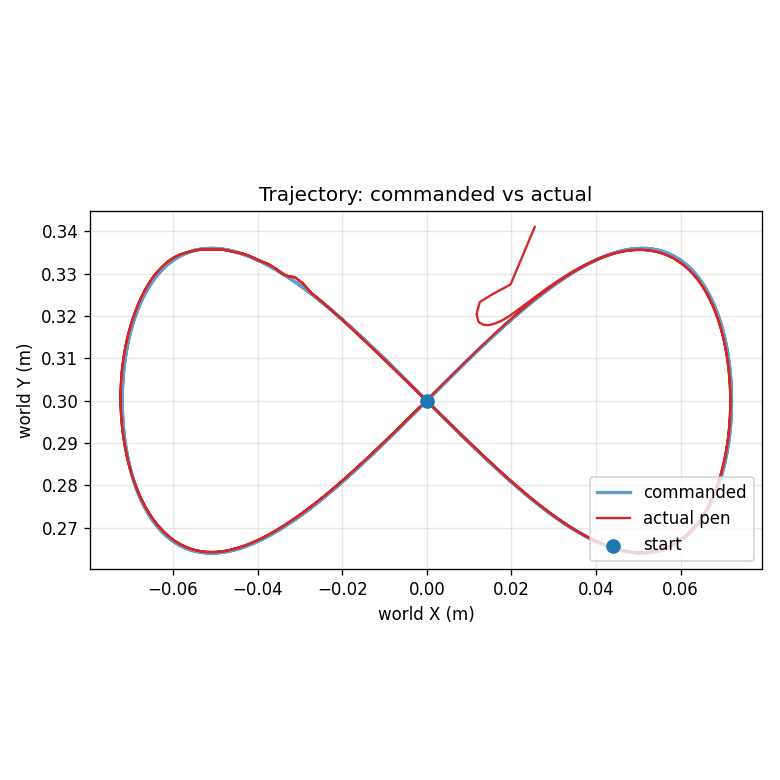
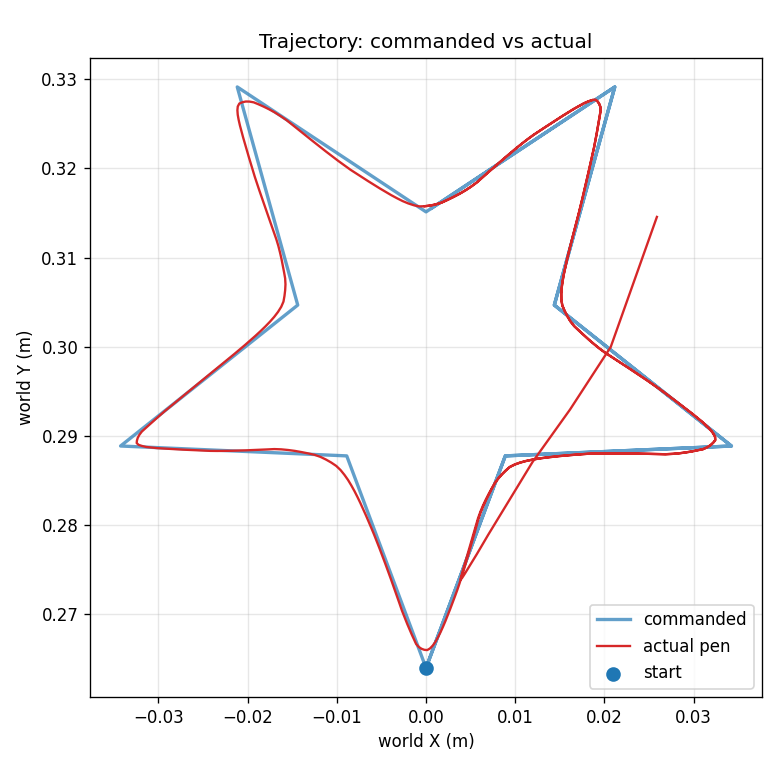

Simulation
Teaching a 4‑DOF arm to draw with reinforcement learning
- Trained a PPO reinforcement-learning policy in MuJoCo to guide the pen tip of a custom 4-DOF arm along target paths. It reached sub-millimetre (0.5–0.9 mm) mean tracking error and handled shapes it never saw in training with no retraining.
- Built a MuJoCo model of the arm from its SolidWorks URDF, then used domain randomisation, curriculum learning and multi-scale reward shaping to cut tracking error from ~30 mm to 0.55 mm over 23 training iterations.
I trained the policy on one shape only, a figure-eight. In the MuJoCo model of the arm it draws that figure-eight, a circle and a five-point star, all with under 1 mm of average error. It stays inside the real arm's joint speed limits and posture limits, and its commands change smoothly from one tick to the next. That last part matters because every command goes straight to stepper motors. This report covers the final model, version 23, and how I got there.



Results
I measured these at the setting the arm will actually use: each shape at 0.9× size, with the paper 5 mm closer to the base.
| Shape | Seen in training | Average error | Worst error | Mean jerk |
|---|---|---|---|---|
| Figure-eight | Yes | 0.52 mm | 1.72 mm | 0.019 |
| Circle | No | 0.71 mm | 1.52 mm | 0.012 |
| Star | No | 0.85 mm | 2.62 mm | 0.010 |
- All runs are in MuJoCo with the policy deterministic and both posture limits on.
- The errors leave out the first second, which is the move from rest onto the path.
- Mean jerk is the average size of the change in the four-joint command from one tick to the next. Each command sits between −1 and 1.
- At full size with the paper in its default position, the figure-eight averages 0.80 mm (worst 3.98 mm).
- The pen stays about 4° from vertical on average.
- For comparison, v4 was the first version to draw all three shapes, and it averaged 2.3 mm on the figure-eight. v13, which the final training chain started from, averaged 1.74 mm with a mean jerk of 0.056.
How the system works
The digital twin
The MuJoCo model (robot/arm.xml) is built from the arm's SolidWorks URDF and meshes. I added the details that affect where the pen ends up: the measured pen offset from the wrist joint (35.25, 88.75, −75.76 mm), the 5 mm mounting platform, the 2.5 mm lift from the bearing under the first link, and the measured link masses. Physics runs at 200 Hz and the policy acts at 20 Hz, once every 50 ms.
What the policy sees
Each tick it gets 23 numbers: the four joint angles (with 5 mrad of noise added), the four joint velocities, the pen-tip position, and the target point now and 0.2, 0.5 and 1.0 s ahead. It is never told the time or which shape it's drawing.
What it controls
The output is four numbers between −1 and 1, one per joint. Each is scaled to the biggest step that joint can make in one tick:
| Joint | Top speed |
|---|---|
| Base | 100.8°/s |
| Shoulder | 48.1°/s |
| Elbow | 63.0°/s |
| Wrist | 135.2°/s |
These are the firmware's step rates minus 10%, so the policy can never plan a move the steppers can't make. Each step is added to the current command, then clipped to the joint limits and to two posture limits:
- Shoulder ≤ 90°, which keeps the arm clear of its base.
- Shoulder + elbow ≤ 180°, which keeps the wrist angle that holds the pen vertical,
−90° − (shoulder + elbow), inside the wrist's −270° to −90° range.
The network
It's Stable-Baselines3 PPO with the default MLP, two hidden layers of 64. Inputs are normalised with running statistics saved in vecnormalize.pkl, and the policy needs that file at run time.
Running it on the arm
deploy_to_arm.py rebuilds the same environment with both posture limits and runs the same 20 Hz loop. The steppers have no position feedback, so MuJoCo is only used for forward kinematics on the commanded pose. Each tick the script sends <base, shoulder, −elbow, wrist + 270, gripper> over serial to the ESP32-S3.
How I trained it
Training ran in three stages. Each one started from the previous stage's weights and normalisation statistics, and all three used the figure-eight only.
| Stage | Training | Starts from | What it adds |
|---|---|---|---|
| v13 | 5.5M steps, learning rate 3×10−4, 8 parallel environments | Scratch | Learns to draw, with the reward terms switched on in stages |
| v21 | +1M steps (best checkpoint at step 6,285,024) | v13 | Both posture limits |
| v23 | +500k steps at learning rate 1×10−4 (best checkpoint at step 6,745,024) | v21's best checkpoint | A penalty on how much the command changes between ticks |
The reward
Per tick, with e as the distance from pen to target and z as the pen's height (both in metres). By v23 every term is at full strength.
- Tracking:
−50e + 5·exp(−e/25 mm) + 10·exp(−e/3 mm) + 15·exp(−e/0.5 mm), plus 5 whenever e < 1 mm. The linear term pulls the pen in from far away, and each exponential tightens the pull at a finer scale. That's what gets the error under a millimetre. - Pen height:
−1000·|z| + 2·exp(−|z|/1 mm). - Wrist: a bonus of
5·exp(−|J4 − (−90° − J2 − J3)| / 0.05 rad)for holding the angle that keeps the pen vertical (J2, J3 and J4 are the shoulder, elbow and wrist angles), and a penalty of−8·(p_z + 1)²on any tilt of the pen axis p. - Table:
−1000·d − 100,000·d²when the pen tip is a distance d below the table top. - Effort:
−5·|a|², where a is the four-joint command. - Smoothness (added in v23):
−λ·|aₜ − aₜ₋₁|², where aₜ is the command at tick t.
Bringing the reward terms in gradually
In v13 I ramped some terms up over a window of training steps:
| Term | Ramped up over |
|---|---|
| Wrist bonus | 1–2M steps |
| Height terms | 2–3M steps |
| Table penalty (to full strength) | 4–5M steps |
In earlier runs, turning the height and table penalties on from the start pushed the policy away from the paper altogether. Bringing them in later lets it learn to track first.
What v23 changed
The effort term only charges for large commands, so the policy could still flip between small ones every tick. v23 charges for the change itself. Measured on the figure-eight at 0.9×, with both posture limits on and each run's best checkpoint:
| v21 | v23 | |
|---|---|---|
| Shoulder command change per tick | 0.070 | 0.007 |
| Mean jerk, all four joints | 0.089 | 0.021 |
| Average error | 0.80 mm | 0.55 mm |
| Worst error | 1.84 mm | 1.58 mm |
v23 came out both smoother and more accurate, so the jitter hadn't been helping accuracy at all. I also tried raising the effort weight instead (v22, from 5 to 7.5). That improved the error by about as much, but the commands weren't any smoother: its jerk was 0.093. Smoothness matters on the hardware because each 50 ms command goes straight to the steppers, and a command that reverses every tick makes the motors reverse every tick.
Why it works on shapes it never saw
- It reacts to where things are, not to time. The inputs describe the pen and the next stretch of path the same way whatever the shape, so the policy learned a general rule for moving toward the path. It doesn't replay a sequence of figure-eight moves.
- The figure-eight already contains the bends the other shapes need. It turns left for half of each lap and right for the other half. Across the training sizes its bends range from a 13 mm radius to dead straight, at pen speeds of 22–71 mm/s. The test circle (36 mm radius, 22.6 mm/s) sits inside that range. The star's edges are straight and slower (15.8 mm/s) than anything in training.
- Randomisation stops it memorising anything else. Every episode starts at a random point on the curve, moves the paper 0–40 mm further from the base, scales the shape 0.8–1.2×, varies link masses by ±10% and joint friction by ±20%, and adds noise to the joint readings.
- It copes with places it never visited. Part of the test circle is 29 mm from the nearest target seen in training. Where the circle is more than 15 mm from any training target, the error is actually lower than on the rest of the lap: 0.26 mm average, 0.41 mm worst.
- The look-ahead handles the one new feature, corners. On the star, the 0.2 s look-ahead point is about 3 mm ahead, so each corner shows up in the inputs before the pen gets there. Corners are still the hardest part: all 20 of the star's largest errors are within 2.4 mm of a corner, and the worst one (2.62 mm) is right at one.
Still to do
- It hasn't drawn on paper yet. A dry run of
deploy_to_arm.pywith v23 (both posture limits, 0.9× size, paper centre 300 mm from the base) held 20 Hz for 120 ticks with no overruns and no dropped serial frames. I don't have an ink-on-paper result yet. - Full size doesn't fit inside the posture limits. With the limits on, the pen can reach 245–330 mm from the base, but the full-size figure-eight goes out to 340 mm. That's why the arm draws at 0.9× size with the paper 5 mm closer.
- I didn't record the smoothness weight λ. It was passed in as
--action-rate-lambda, but the logs don't keep its value. I need to record it before any retraining. - There's no position feedback. The arm has no encoders, so if a stepper misses steps on the real arm, nothing will notice.